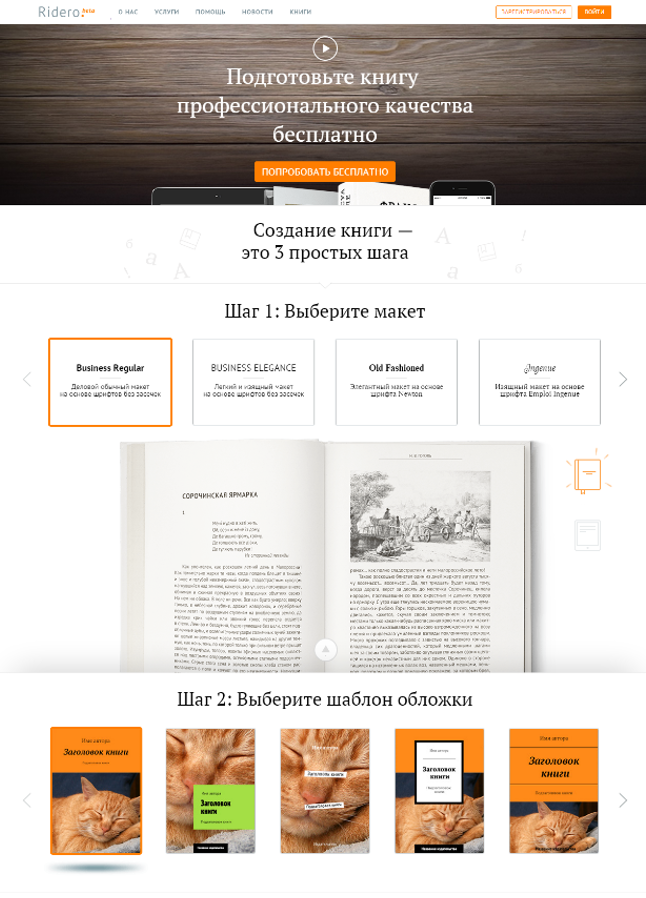
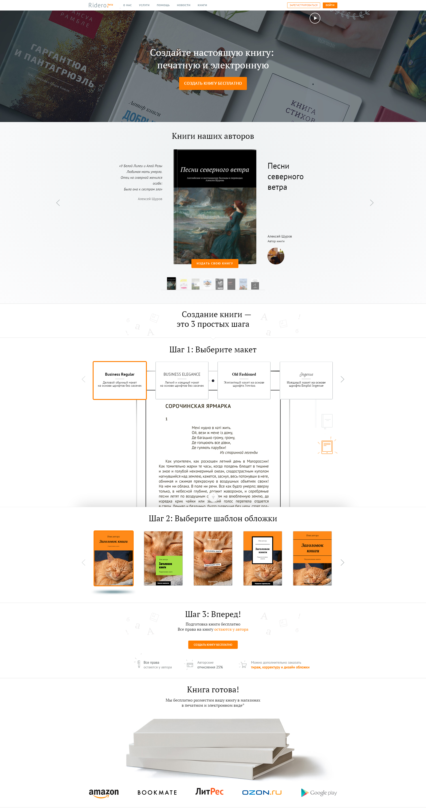
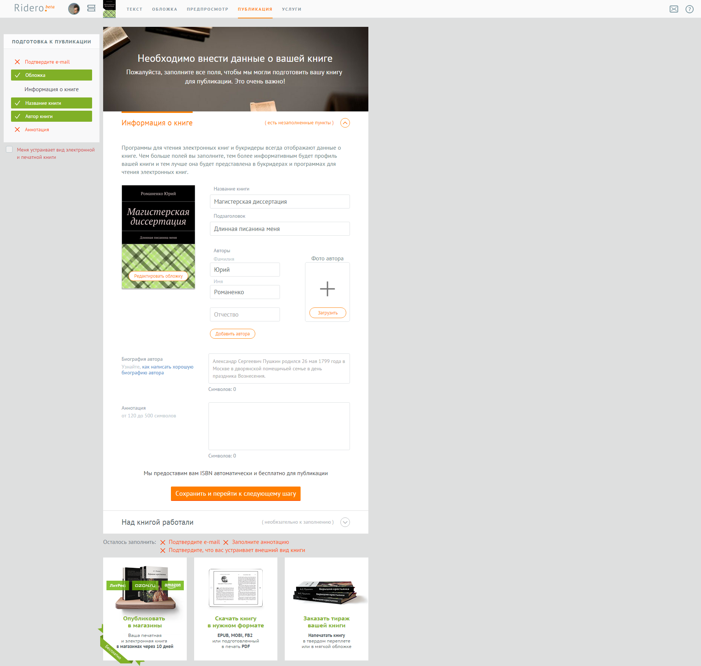
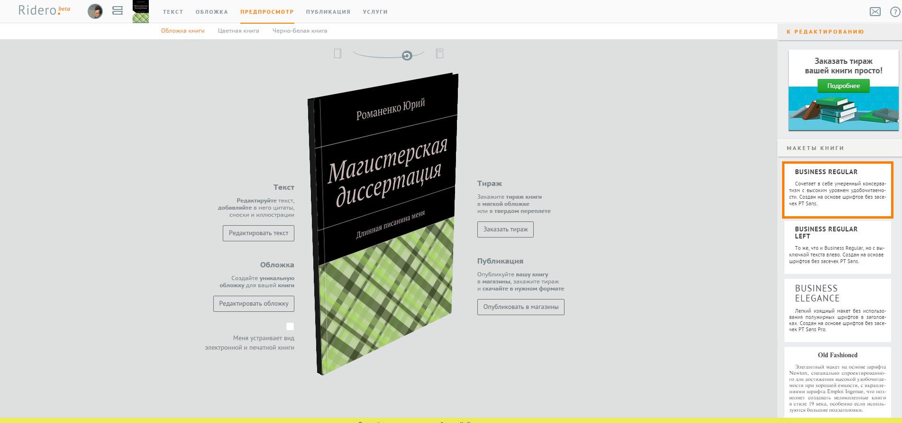
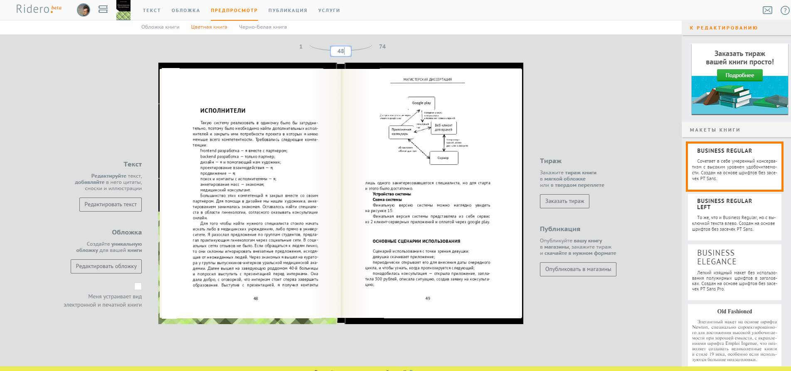
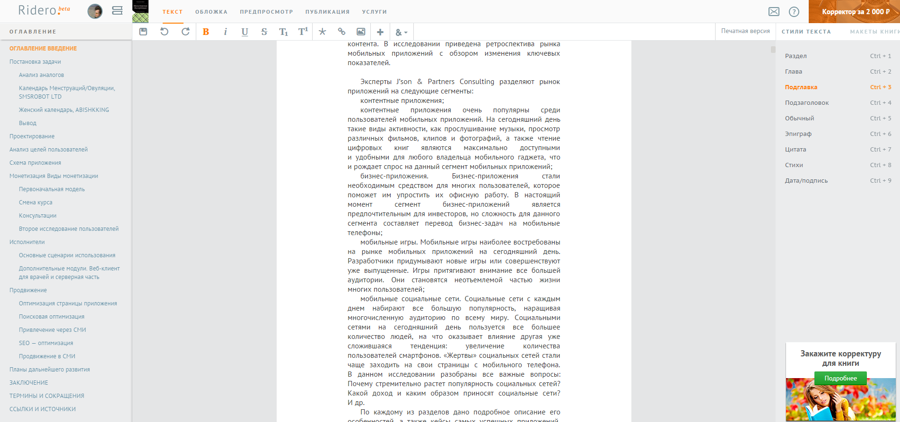

<div class="page portfoliomodal1" id="portfoliomodal1" tabindex="-1" role="dialog" aria-hidden="true">
	<div class="1modal-content">
		<!--<div class="close-modal" data-dismiss="modal">-->
			<!--<div class="lr">-->
				<!--<div class="rl">-->
				<!--</div>-->
			<!--</div>-->
		<!--</div>-->
		<!--<div class="container">-->
			<!--<div class="row">-->
					<!--<div class="modal-body">-->
						<!--&lt;!&ndash; Project Details Go Here &ndash;&gt;-->
						<!--<h2>Ri12312312321dero</h2>-->
						<!--<p class="item-intro text-muted">Интеллектуальная платформа для независимых авторов.</p>-->
						<!---->
						<!--<p>Ridero — электронная издательская платформа для независимых авторов. Разработанная в России, платформа Ridero позволяет авторам любых жанров за несколько минут бесплатно превратить книгу из рукописи (например, файла Word) в полноценно сверстанную электронную и/или бумажную книгу с последующим размещением ее в ведущих онлайн-магазинах (Озон, Litres и других). Ridero.ru функционирует с июля 2014 года и в данный момент объединяет более 9000 независимых авторов – от лидеров книжного рынка до начинающих писателей. Цель Ridero – позволить авторам не зависеть от издательских вкусов, рыночного цикла и закрытой системы книжного распространения.-->
						<!--</p>-->
						<!--<p>-->
							<!--<a href="https://ridero.ru/">Веб-сайт проекта</a>-->
							<!--<ul class="list-inline">-->
								<!--<li>Дата: Июль 2014</li>-->
								<!--<li>Клиент: Ридеро</li>-->
								<!--<li>Категория: Стартап</li>-->
							<!--</ul>-->
							<!--<button type="button" class="btn btn-closemodal"><i class="fa fa-times"></i> Закрыть</button>-->
					<!--</div>-->
			<!--</div>-->
		<!--</div>-->

		<div class="container">
			<h1>Ridero</h1>
			<p class="item-intro">Электронная издательская платформа для независимых авторов</p>
			

			<h4>Редактор книги и 3д-модель</h4>
			<p>Платформа позволяет подобрать оформление книги, просматривая промежуточные результаты при помощи 3д-модели.</p>
			
			
			

			<h4>Автоматическая выкладка в магазины</h4>
			<p>Каждый автор может бесплатно опубликовать свою книгу на нескольких электронных площадках при помощи Ridero</p>
			

			<h4>Сборщик записей в блогах</h4>
			<p>Вызовом стала задача по сбору записей из блога/личного сайта. Эти записи впоследствии должны оформляться в книгу. Для решения был создан модуль
				способный вытянуть текст из блогов созданных в сервисах: blogger.com, livejournal.com, medium.com,
				meduza.io (разделы истории и новости), stihi.ru, proza.ru, tjournal.ru, tumblr.com, wattpad.com, wordpress.com
				внедрение услуги запланировано на конец 2015 года.</p>
			

			<a href="https://ridero.ru/">Веб-сайт проекта</a>
			<ul class="list-inline">
				<li>Дата: Июль 2014</li>
				<li>Клиент: Ридеро</li>
				<li>Категория: Стартап</li>
			</ul>
			<button type="button" class="btn btn-closemodal"><i class="fa fa-times"></i> Закрыть</button>

		</div>
	</div>
</div>